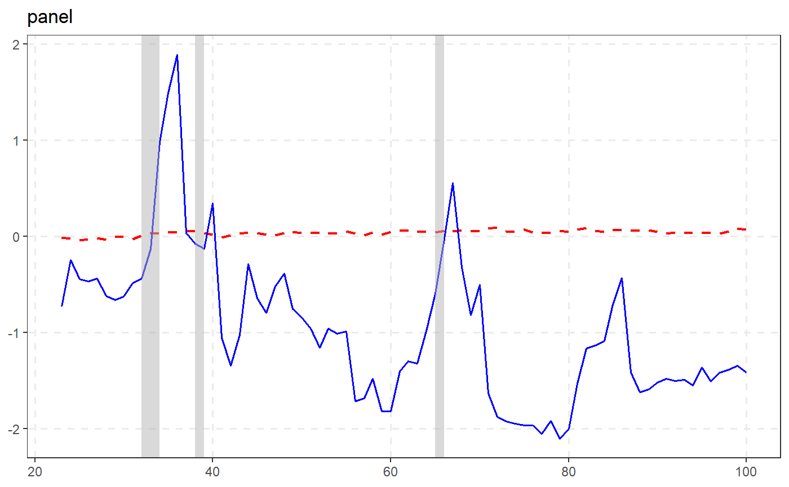
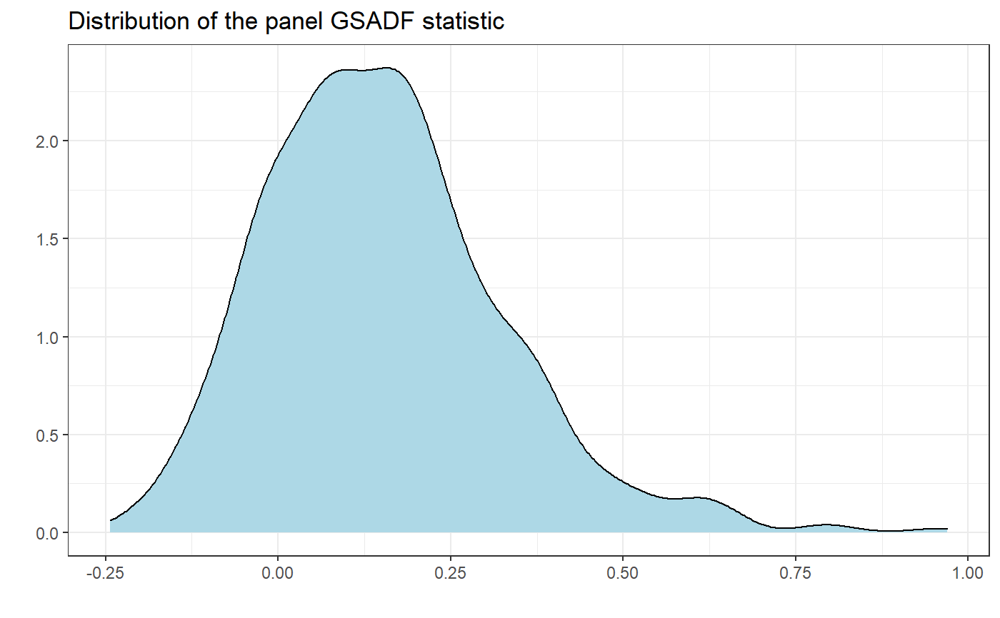

radf_sb_cv computes critical values for the panel recursive unit root test using
the sieve bootstrap procedure outlined in Pavlidis et al. (2016). radf_sb_distr
computes the distribution.
radf_sb_cv(data, minw = NULL, lag = 0L, nboot = 500L, seed = NULL) radf_sb_distr(data, minw = NULL, lag = 0L, nboot = 500L, seed = NULL)
| data | A univariate or multivariate numeric time series object, a numeric vector or matrix, or a data.frame. The object should not have any NA values. |
|---|---|
| minw | A positive integer. The minimum window size (default = \((0.01 + 1.8/\sqrt(T))T\), where T denotes the sample size). |
| lag | A non-negative integer. The lag length of the Augmented Dickey-Fuller regression (default = 0L). |
| nboot | A positive integer. Number of bootstraps (default = 500L). |
| seed | An object specifying if and how the random number generator (rng)
should be initialized. Either NULL or an integer will be used in a call to
|
For radf_sb_cv A list A list that contains the critical values
for the panel BSADF and panel GSADF test statistics. For radf_wb_dist a numeric vector
that contains the distribution of the panel GSADF statistic.
Pavlidis, E., Yusupova, A., Paya, I., Peel, D., Martínez-García, E., Mack, A., & Grossman, V. (2016). Episodes of exuberance in housing markets: In search of the smoking gun. The Journal of Real Estate Finance and Economics, 53(4), 419-449.
radf_mc_cv for Monte Carlo critical values and
radf_wb_cv for wild Bootstrap critical values
# \donttest{ rsim_data <- radf(sim_data, lag = 1) # Critical vales should have the same lag length with \code{radf()} sb <- radf_sb_cv(sim_data, lag = 1) tidy(sb)#> # A tibble: 3 x 3 #> id sig gsadf_panel #> <fct> <fct> <dbl> #> 1 panel 90 0.347 #> 2 panel 95 0.432 #> 3 panel 99 0.641#> #> -- Summary (minw = 19, lag = 1) -------------------------------------------- Sieve Bootstrap (nboot = 500) -- #> #> panel : #> # A tibble: 1 x 5 #> name tstat `90` `95` `99` #> <fct> <dbl> <dbl> <dbl> <dbl> #> 1 gsadf_panel 1.89 0.347 0.432 0.641 #># }